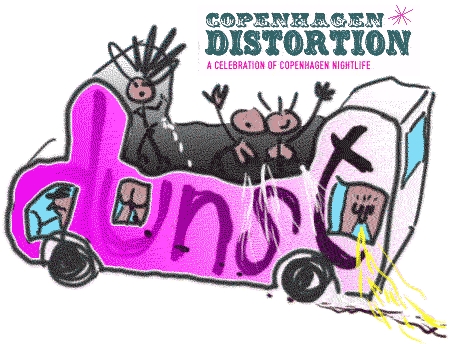

| Christiania Distortion | 3. Juni - 2004 |
| i samarbejde med  |
|
| Thursday 3 June 2004 Christiania Distortion 4 parties Christiania. Price: 60;- Dunst darkroom with poppers for gays and lesbians in bus with DJs Djuna Barnes & Stimulundia. tour start behind Den Graa Hal at 21.21h & 22.22h & 23.23h Woodstock: social art from 21.00h + afterparty, 4.30-5.00h Buy your Christiania Distortion pass at Woodstock (60kr) Operaen 22.00-04.30h: Drama Kings / money your love (electro) Live: Geeza feat Mark Rosener & Nu (electro-rock) Tom Collins (breakbeat-techno) Jokke feat. Trentemøller live on keys (tech-house) Byens Lys 21.30-04.00h: Live 22.30h: Universal Sound System feat Zaki (ragga-hiphop) Ben Horn (eclectic/bootlegs) Laekker Lytter mobile love sound system on pusher street http://www.humanwebsite.com/cphdistortion2004 |
|